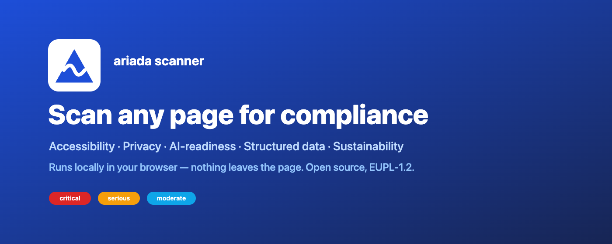
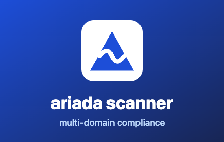
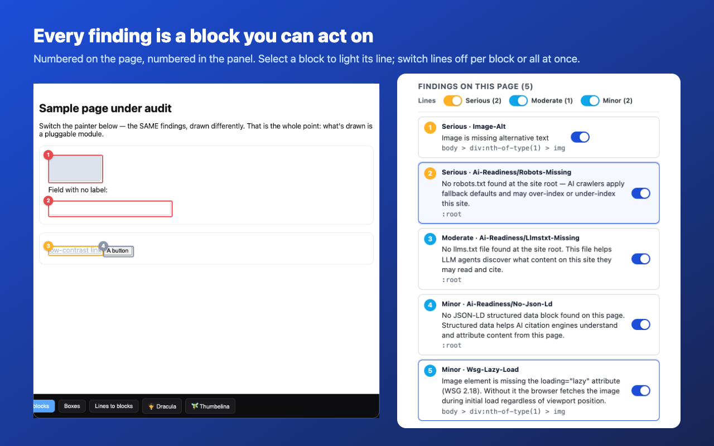

1. Позиционирование (одной строкой)
«Проверь любую страницу на соответствие — прямо в браузере, локально, за один клик».
Крючок: конкуренты (accessiBe, AudioEye, Siteimprove) — облачные, платные, шлют твою страницу на сервер. Мы — локально, бесплатно, open-source, и находим проблему на конкретном элементе.
2. Тексты для листинга (вставить как есть)
Title (из пакета, уже стоит)
ariada scanner — multi-domain compliance
Summary (из пакета)
Scan the active tab against multiple compliance domains in one shared DOM pass. Local-only, no server round-trips.
Description (честная версия — Security убран)
ariada scanner checks the page you're on and reports issues element by element — the exact element, the rule, and the standard each issue maps to — in an accessible results panel. Everything runs locally in your browser; the page is never sent to a server, so you can scan localhost, staging, internal tools, and pages behind a login. Core checks: • Accessibility — WCAG 2.2 (Web Content Accessibility Guidelines) and EN 301 549, the technical basis of the European Accessibility Act. • Structured data — Schema.org and other machine-readable markup. Additional client-side checks: privacy signals in the page markup, markup readiness for AI agents, and sustainability hints. Deeper checks that need HTTP response headers or network data (for example transport security and full page weight) run in the companion command-line tool. Highlight the failing elements directly on the live page, and export the full report as JSON. Open source, European Union Public Licence 1.2. No account, no tracking.
3. Графика для стора (сгенерирована — файлы рядом)
Marquee promo tile — 1400×560

Small tile — 440×280

Скриншот-герой — 1280×800

Store icon 128×128 — уже в пакете (icons/icon-128.png). Нужен минимум 1 скриншот 1280×800 — герой выше подходит. Marquee опционален, но повышает выдачу.
4. Подписи к скриншотам (по 1 фразе — CWS показывает под каждым)
- Findings, element by element. The exact element, the rule, and the standard it maps to.
- Highlight on the live page. See each failing element right where it is — no guessing from a report.
- Local only. Scan localhost, staging, and pages behind a login — nothing leaves your browser.
- Multiple domains, one pass. Accessibility, privacy, AI-readiness, structured data, sustainability.
- Export the full report. One click to JSON — drop it into your issue tracker or CI.
5. План промо-видео (45–60 сек)
Формат: экранкаст без лица, спокойный голос за кадром или только подписи + музыка. Цель — за 15 секунд показать «клик → находки на элементах». Захват в реальном Chrome с установленным расширением.
| # | Время | Кадр | Голос / подпись |
|---|---|---|---|
| 1 | 0–4с | Обычный сайт открыт. Курсор кликает иконку расширения → выезжает боковая панель. | «Any page. One click.» |
| 2 | 4–10с | Клик «Scan this page». Прогресс-бар → появляется список находок с чипами critical/serious. | «Ariada scans it locally — nothing leaves your browser.» |
| 3 | 10–20с | Наведение на находку → клик «Highlight on page» → на странице загораются рамки на битых элементах. | «See exactly which element fails — and the rule it breaks.» |
| 4 | 20–30с | Крупно: строка находки «image-alt · WCAG 1.1.1 · <img>». Панель доменов: Accessibility, Privacy, AI-readiness… | «WCAG 2.2, the European Accessibility Act, and more — in one pass.» |
| 5 | 30–40с | Сканирование localhost / страницы за логином (показать URL localhost). Клик «Download JSON report». | «Works on localhost, staging, and pages behind a login. Export in one click.» |
| 6 | 40–50с | Логотип ariada (треугольник+нить), плашка «Open source · EUPL-1.2 · No account». | «Free. Open source. Install from the Chrome Web Store.» |
Чек-лист съёмки
- Разрешение записи 1920×1080, панель 400px, зум браузера 110–125% для читаемости.
- Демо-страница с заведомо битыми элементами (img без alt, input без label, низкий контраст) — чтобы находки были гарантированно.
- Скрыть личные вкладки/закладки (чистый профиль-демо) перед записью.
- Первые 3 секунды = хук (клик → панель). Не начинать с логотипа.
- Экспорт видео: MP4 H.264, <30 МБ для соцсетей; вертикальный 9:16 обрез для Shorts/Reels отдельно.
6. Куда что вставить в CWS (шпаргалка)
| Поле | Значение |
|---|---|
| Description | текст из §2 |
| Category | Developer Tools |
| Language | English |
| Screenshot (обязателен) | screenshot-hero-1280x800.png |
| Marquee promo tile | marquee-1400x560.png |
| Small promo tile | small-tile-440x280.png |
| Homepage URL | https://github.com/ariada-org/ariada |
| Support URL | https://github.com/ariada-org/ariada/issues |
| Mature content | OFF |
| Trader | ON (Agonist Development AB) |
7. Статус готовности к публикации
| Пункт | Статус |
|---|---|
| Баг «Scan failed» (доступ к странице) | исправлено — v0.2.2 (запрос доступа http/https по клику Scan) |
| Security-домен врёт в браузере | убран из расширения (остаётся в CLI) |
| Тайпчек + тесты | 72/72, tsc чисто |
| Пакет | ariada-extension-v0.2.2.zip (перезалить в CWS) |
| Проверка на живой странице в браузере | НЕ проверено вживую — нужно поставить v0.2.2 и прогнать Scan (гэп) |
| 6 доменов честно работают в браузере | 2 полноценно + 3 частично; дотяжка снапшота — отдельная итерация |
Вывод: перезалей zip v0.2.2, вставь тексты/графику, но Submit только после того как проверишь Scan вживую на v0.2.2.